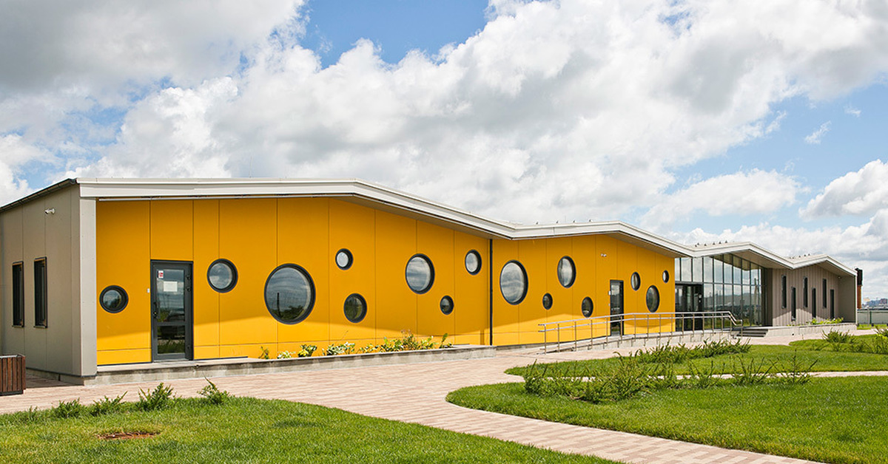

О нас
Наша компания собирает самых необычных котиков со всего мира с 2000 года. До 2012 года мы существовали исключительно в форме небольшой группы и хранили котиков у себя в квартирах. Но к 2022 году мы расширили нашу деятельность и своими силами построили небольшой приют для наших пушистых друзей.

Наш уютный приют для котиков
С тех пор мы имеем больше возможностей для помощи необычным котикам, но всё ещё нуждаемся в вашей поддержке. Ваша помощь позволяет нам продолжать заботиться о наших подопечных, обеспечивая их всем необходимым. Мы верим, что вместе можем сделать мир лучше для этих удивительных животных. Присоединяйтесь к нам и станьте частью нашего доброго дела!